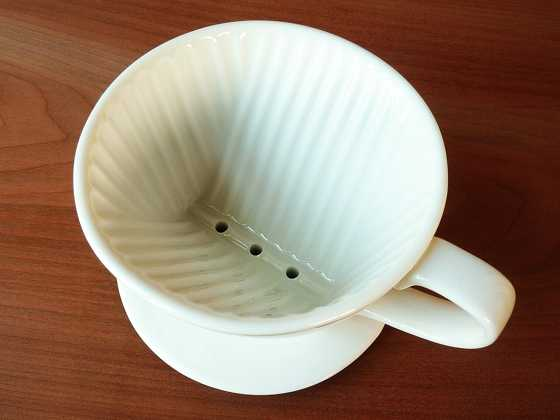
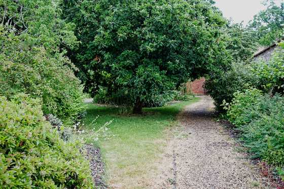
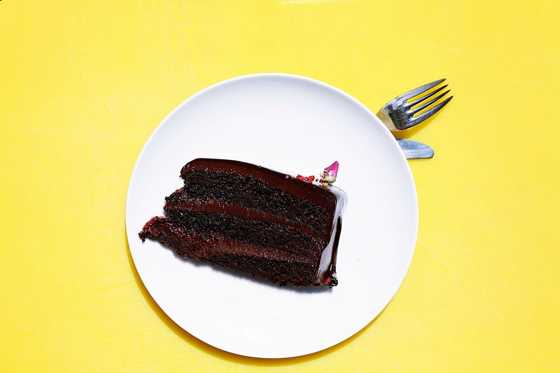
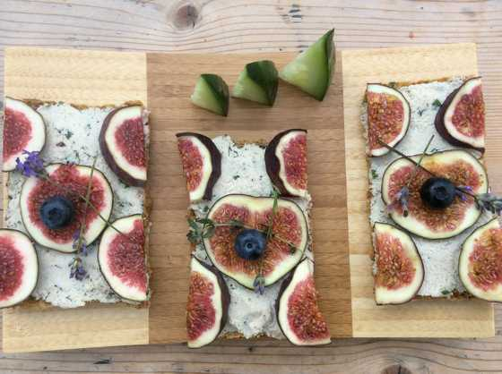
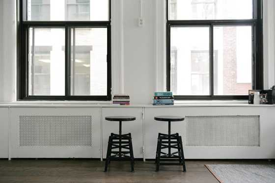

ドリップコーヒー
じっくり淹れるブレンド 500円(掲載記事より)。エスプレッソ・カフェラテもあります。

秋田県大館市向町
学生時代の音楽の思い出を店の名に。庭の緑と百年を超える蔵のそばで、コーヒーとお菓子をゆっくりどうぞ。
ABOUT
店主は、中学校の教員を約35年務めたのち、長年の夢だったカフェを開きました。店名の「ぺんたとにっく」は、大学時代の思い出が詰まった音楽用語「ペンタトニック」に由来します。
店内はテーブル席とカウンター席の全12席で、おひとりでも入りやすい造りです。窓の外には庭が広がり、敷地には百年以上の歴史がある蔵が併設されています。蔵は展示やイベントの場として使えるお店です。

MENU







※掲載写真はフリー素材のイメージ(国内外の別の場所で撮影されたもの)で、店舗の実際の様子ではありません。
VOICE
イメージ例庭の緑を眺めながら飲むコーヒーが落ち着きます。ひとりでも気兼ねなく過ごせました。(創作のイメージ例です)
イメージ例しっとりしたチーズケーキとコーヒーのセットでひと休み。ゆったりした時間でした。(創作のイメージ例です)
イメージ例蔵があると聞いて気になっています。展示やイベントの様子も見てみたいです。(創作のイメージ例です)
※口コミは制作側が作成したイメージ例で、実在のお客様の声ではありません。
ACCESS
※営業時間は大館市の起業・創業者紹介ページ等の2025年時点の情報です。最新の営業状況はInstagramでご確認ください。
Instagram @cafe_pentatonic写真クレジット(すべてフリー素材):
mug: Shixart1985 / CC BY 2.0 ・ teapot: Nathan Fertig / CC0 1.0 ・ wood: W.carter / CC0 1.0 ・ bowl: W.carter / CC BY-SA 4.0 ・ monstera: Smatu / CC BY-SA 4.0 ・ window: Rhododendrites / CC BY-SA 4.0 ・ toast: robyn randolph / CC0 1.0 ・ cake: Toa Heftiba / CC0 1.0 ・ windowroom: Breather / CC0 1.0 ・ cheesecake: Andy Li / CC0 1.0 ・ beans: Andy Li / CC0 1.0 ・ garden: Acabashi / CC BY-SA 4.0 ・ dripper: Quercus acuta / CC BY-SA 4.0(出典はWikimedia Commons等。一部加工:縮小)
この写真はフリー素材のイメージで、店舗の実際の様子ではありません。